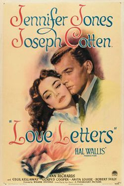
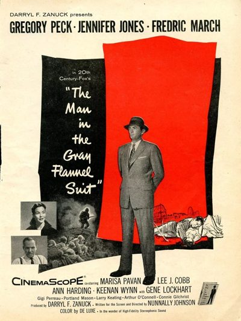

THE STANFORD THEATRE
Now Showing
·
Upcoming
·
Past
·
Search
January 8 - 28, 2010
Remembering Jennifer Jones
11 bills
January 8
Love is a Many Splendored Thing (1955)
102 min
Good Morning, Miss Dove (1955)
107 min
January 9 - 10
Love is a Many Splendored Thing (1955)
102 min
Good Morning, Miss Dove (1955)
107 min
January 11 - 12
The Song of Bernadette (1943)
155 min
Madame Bovary (1949)
106 min
January 13 - 15

Love Letters (1945)
101 min
Gone to Earth (1950)
110 min
January 16 - 17
Duel in the Sun (1946)
129 min
Portrait of Jennie (1948)
86 min
January 18
Duel in the Sun (1946)
129 min
Portrait of Jennie (1948)
86 min
January 19 - 20
Cluny Brown (1946)
108 min
Beat the Devil (1953)
89 min
January 21 - 23
Carrie (1952)
118 min
We Were Strangers (1949)
106 min
January 24
Since You Went Away (1944)
120 min
January 25 - 26
Since You Went Away (1944)
120 min
January 27 - 28

The Man in the Gray Flannel Suit (1956)
153 min